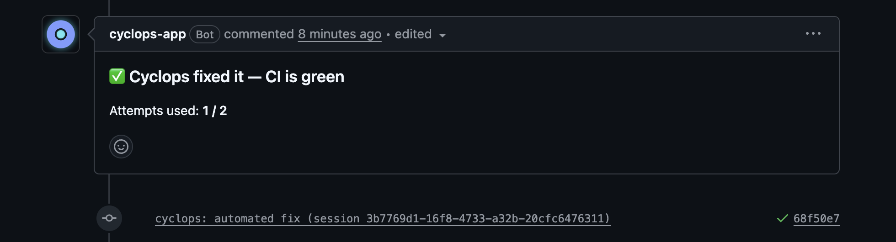
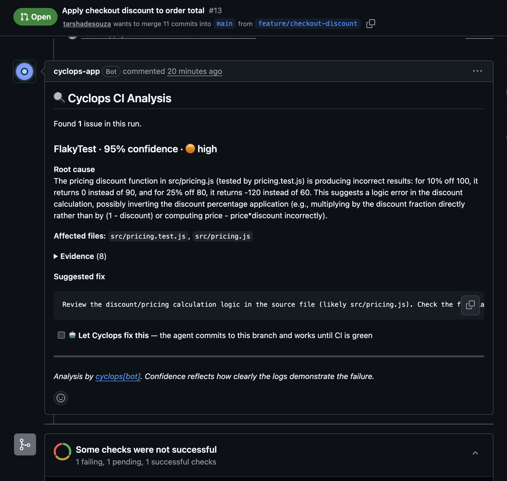
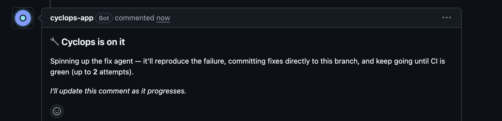

CyclOps watches your GitHub Actions, classifies every failure, explains the root cause in plain language, and executes safe auto-fixes — so you stop reading logs by hand.

Every workflow failure flows through a five-stage pipeline. No dashboards to check, no logs to scroll.
A workflow fails. GitHub webhook fires; the event is queued in milliseconds.
Six detectors classify the failure — lint, tests, flaky, build, secrets, env.
AI enriches the finding with evidence, confidence, and a suggested fix.
One click and a coding agent fixes it in a sandbox, looping until your real CI is green.
A single PR comment + Check Run tells you exactly what happened.
Each failure is classified before a single AI token is spent — so analysis is precise and cheap.
Detects formatting and lint errors, then opens a PR with the fixes already applied.
Pinpoints the failing assertion and the change that most likely caused it.
Recognizes intermittent failures from run history and re-runs instead of blocking you.
Isolates compile and dependency errors with the exact offending line.
Flags auth failures caused by rotated or expired credentials, and pings Slack.
Catches configuration gaps before they cascade into confusing downstream errors.
On a fixable failure, CyclOps drops a checkbox into its PR comment — “Let Cyclops fix this”. Tick it, and a coding agent does the work in an isolated sandbox, verifying against your real CI, not a local guess.
The agent runs once and posts a real diff in the PR. Tick Apply and it commits — one commit, no loop. The safe default.
The agent loops until CI is green on a fresh cyclops/fix/* branch, then opens a green PR for review. Your branch is never touched.
The agent loops until green, committing directly to the PR's own branch. Maximum autonomy — branch protection still gates the merge.
Every fix is explicit and permission-gated, posts a live status comment, and stops safely — on success, on a dry run, at the iteration cap, or on error.


Install and go: safe defaults work out of the box. Drop a .cyclops.yml in any repo to shape exactly what CyclOps does — versioned with your code, no dashboards.
# .cyclops.yml — every field optional autofix: mode: agent # off · suggest · agent agent: permission: safe # safe · all-in maxIterations: 3 # re-run vs real CI until green model: claude-sonnet-5 dryRun: false # propose only, commit nothing confidenceThreshold: 0.85 detectors: { lint: true, flakyTest: true, build: true } prComments: true notifications: slack: { enabled: true, channel: "#ci" }
Per-installation data isolation enforced at both the query layer and Postgres RLS. Your data never crosses org lines.
Findings are deduplicated and consolidated into a single PR comment that updates in place — no notification spam.
Only high-confidence, low-risk actions run automatically. Config kill-switches let you disable any behavior per repo.
Use your own Anthropic key, or route through any Anthropic-compatible gateway. Keys are encrypted at rest.
Install and go. Sensible defaults work out of the box; add an optional .cyclops.yml to customize.
Ships as an npm package. Self-host it, or write your own detectors on top of the core.
# CI job fails on your PR… cyclops[bot] commented on #142 ⚠ Lint failure detected (confidence 0.94) → 3 formatting errors in src/api/routes.ts → Root cause: missing semicolons after refactor ✓ Auto-fix PR opened → #143 ✓ Check Run updated: 1 issue, 1 fix ready
Add the GitHub App, pick your repos, and CyclOps starts watching immediately. No config required.